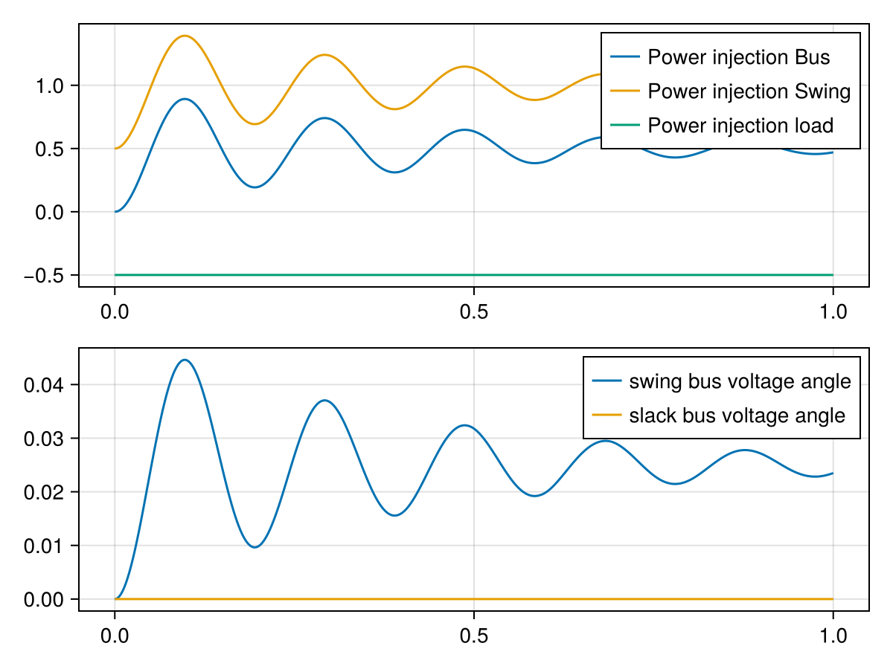

Modeling Concepts
In general, PowerDynamics models power grids as a set of dynamical systems for both nodes and edges on a graph. Check out the Mathematical Model documentation of NetworkDynamics for the underlying concepts.
The simulation happens entirely in a synchronous dq-frame. Due to their conceptual similarity to complex phasors, variables in this global dq-frame are referenced by subscripts _r and _i (for real and imaginary). This helps distinguish the variables from local dq frames, e.g. a generator model might transform u_r and u_i into u_d and u_q.
Both edge and node models are so-called input-output-systems: the edges receive the voltage of adjacent nodes as an input, the nodes receive the currents on adjacent edges as an input. In general, this leads to the following structure of a bus/node model:
\[\begin{aligned} M_{\mathrm v}\,\frac{\mathrm{d}}{\mathrm{d}t}x_{\mathrm v} &= f_{\mathrm v}\left(x_{\mathrm v}, \sum_k\begin{bmatrix}i^k_r\\ i^k_i\end{bmatrix}, p_{\mathrm v}, t\right)\\ \begin{bmatrix}u_r\\ u_i\end{bmatrix} &= g_{\mathrm v}(x_{\mathrm v},p_{\mathrm v}, t) \end{aligned}\]
where $M_{\mathrm v}$ is the (possibly singular) mass-matrix, $x_{\mathrm v}$ are the internal states and $p_{\mathrm v}$ are parameters. Function $f_{\mathrm v}$ describes the time evolution of the internal states while output equation $g_{\mathrm v}$ defines the output voltage. The input for the system is the sum of all inflowing currents from adjacent lines $k$. Note how vertices are modeled as one-port systems; i.e., they receive the accumulated current from all connected lines, they can't distinguish which line provides which current. For special cases, this limitation might be mitigated using External Inputs.
An important distinction between our modeling and the modeling in many other libraries is that we include the injector dynamics inside the node dynamics. I.e. if you have a bus with a load and a generator, the overall node dynamics will include both machine and load dynamics within their equations. The modularity and model reuse on the bus level is provided by ModelingToolkit.jl integration.
The edge model on the other hand looks like this:
\[\begin{aligned} M_{\mathrm e}\,\frac{\mathrm{d}}{\mathrm{d}t}x_{\mathrm e} &= f_{\mathrm e}\left(x_{\mathrm e}, \begin{bmatrix} u_r^\mathrm{src}\\u_i^\mathrm{src}\end{bmatrix}, \begin{bmatrix} u_r^\mathrm{dst}\\u_i^\mathrm{dst}\end{bmatrix},p_\mathrm{e}, t\right)\\ \begin{bmatrix}i_r^\mathrm{src}\\i_i^\mathrm{src}\end{bmatrix} &= g^\mathrm{src}_{\mathrm e}\left(x_{\mathrm e}, \begin{bmatrix} u_r^\mathrm{src}\\u_i^\mathrm{src}\end{bmatrix}, \begin{bmatrix} u_r^\mathrm{dst}\\u_i^\mathrm{dst}\end{bmatrix}, p_\mathrm{e}, t\right)\\ \begin{bmatrix}i_r^\mathrm{dst}\\i_i^\mathrm{dst}\end{bmatrix} &= g^\mathrm{dst}_{\mathrm e}\left(x_{\mathrm e}, \begin{bmatrix} u_r^\mathrm{src}\\u_i^\mathrm{src}\end{bmatrix}, \begin{bmatrix} u_r^\mathrm{dst}\\u_i^\mathrm{dst}\end{bmatrix}, p_\mathrm{e}, t\right)\\ \end{aligned}\]
There are a few notable differences compared to bus models: Edges are two-port systems, they have two distinct inputs and two distinct outputs. Namely, they receive the dq voltage from both source and destination end, and define the current for both ends separately. In very simple systems without losses, those output currents might be just antisymmetric, in general cases however the current on both ends can differ drastically.
Source and destination end of a line are purely conventional. It has nothing to do with the actual flow direction. Per convention from Graphs.jl, edges in undirected graphs always go from vertex with lower index to vertex with higher index, i.e. $15 \to 23$ never $23 \to 15$.
The above descriptions are important to understand what's happening inside the package. However, since we use ModelingToolkit to define the individual models a lot of this complexity is hidden from the user. In the following, we'll go through the most important concepts when designing models using ModelingToolkit.
Relationship between ModelingToolkit and NetworkDynamics
A crucial part of using this library is understanding the relationship between ModelingToolkit models and NetworkDynamics.
In a nutshell, ModelingToolkit models are symbolic models; i.e., they consist of symbolic equations which are not yet "compiled" for use as a numeric model. The modeling in MTK is very flexible and similar to the Modelica language. What we need in the end is models in the structure defined in the equations above. For that, we need the MTK models to have a specific structure. Then we can use the compile_bus and compile_line function to compile the MTK models and create EdgeModel and VertexModel objects from them. Those objects are not symbolic anymore but compiled numeric versions of the symbolically created systems.
ModelingToolkit Models
Terminal
The Terminal-Connector is an important building block for every model. It represents a connection point with constant voltage in dq-coordinates u_r and u_i and enforces the Kirchhoff constraints sum(i_r)=0 and sum(i_i)=0.
Modeling of Buses
Model class Injector
An injector is a class of components with a single Terminal() (called :terminal). Examples for injectors might be Generators, Shunts, Loads.
(t) ┌──────────┐
o←───┤ Injector │
└──────────┘The current for injectors is always in injector convention; i.e., positive currents flow out of the injector towards the terminal.
Model "classes" are nothing formalized. In this document, a model class is just a description for some System from ModelingToolkit.jl, which satisfies certain requirements. For example, any System is considered an "Injector" if it contains a connector Terminal() called :terminal.
You can check if a model satisfies the injector interface using the isinjectormodel function.
Code example: definition of PQ load as injector
using PowerDynamics, PowerDynamics.Library, ModelingToolkitBase, SciCompDSL
using ModelingToolkitBase: D_nounits as Dt, t_nounits as t
@mtkmodel MyPQLoad begin
@components begin
terminal = Terminal()
end
@parameters begin
Pset, [description="Active Power demand"]
Qset, [description="Reactive Power demand"]
end
@variables begin
P(t), [description="Active Power"]
Q(t), [description="Reactive Power"]
end
@equations begin
P ~ terminal.u_r*terminal.i_r + terminal.u_i*terminal.i_i
Q ~ terminal.u_i*terminal.i_r - terminal.u_r*terminal.i_i
# if possible, it's better for the solver to explicitly provide algebraic equations for the current
terminal.i_r ~ (Pset*terminal.u_r + Qset*terminal.u_i)/(terminal.u_r^2 + terminal.u_i^2)
terminal.i_i ~ (Pset*terminal.u_i - Qset*terminal.u_r)/(terminal.u_r^2 + terminal.u_i^2)
end
endModel class MTKBus
A MTKBus is a class of models, which are used to describe the dynamic behavior of a full bus in a power grid. Each MTKBus must contain a predefined model of type BusBar (named :busbar). This busbar represents the connection point to the grid. It also contains a SystemBase named :systembase, which carries the global per-unit bases (Sbase, ωbase) and the reference frame speed ωframe. Components inside the bus bind their own base shadows to it (bound_to = :systembase₊Sbase). Optionally, it may contain various injectors. Both busbar and systembase will be added automaticially if you use the MTKBus constructor. If there are no injectors, the model just describes a junction bus; i.e., a bus that just satisfies the Kirchhoff constraint for the flows of connected lines.
┌───────────────────────────────────┐
│ MTKBus │
│ ┌──────────┐ ┌───────────┐ │
│ │ BusBar ├───o──┤ Generator │ │
│ └──────────┘ │ └───────────┘ │
│ ╭──────────┐ │ ┌───────────┐ │
│ │SystemBase│ └──┤ Load │ │
│ └──────────┘ └───────────┘ │
└───────────────────────────────────┘Sometimes it is not possible to connect all injectors directly but instead one needs or wants Branches between the busbar and injector terminal. As long as the :busbar is present at the toplevel, there are few limitations on the overall model complexity.
For simple models (direct connections of a few injectors), it is possible to use the convenience method MTKBus(injectors...) to create the composite model based on provided injector models.
You can check if a model satisfies the bus interface using the isbusmodel function.
Code example: definition of a Bus containing a swing equation and a load
using PowerDynamics, PowerDynamics.Library, ModelingToolkitBase, SciCompDSL
@mtkmodel MyMTKBus begin
@components begin
systembase = SystemBase() # optional, injected at compile_bus
busbar = BusBar()
swing = Swing()
load = PQLoad()
end
@equations begin
connect(busbar.terminal, swing.terminal)
connect(busbar.terminal, load.terminal)
end
endAlternatively, for that system you could have just called
mybus = MTKBus(Swing(;name=:swing), PQLoad(;name=:load))to get an instance of a model which is structurally equivalent to MyMTKBus.
Line Modeling
Model class Branch
A branch is the two-port equivalent to an injector. It needs to have two Terminal()s, one is called :src, the other :dst.
Examples for branches are: PI-model branches, dynamic RL branches or transformers.
(src) ┌──────────┐ (dst)
o←──┤ Branch ├──→o
└──────────┘Both ends follow the injector interface; i.e., current leaving the device towards the terminals is always positive.
You can check if a model satisfies the branch interface using the isbranchmodel function.
Code example: algebraic R-line
using PowerDynamics, PowerDynamics.Library, ModelingToolkitBase, SciCompDSL
@mtkmodel MyRLine begin
@components begin
src = Terminal()
dst = Terminal()
end
@parameters begin
R=0, [description="Resistance"]
end
@equations begin
dst.i_r ~ (dst.u_r - src.u_r)/R
dst.i_i ~ (dst.u_i - src.u_i)/R
src.i_r ~ -dst.i_r
src.i_i ~ -dst.i_i
end
endModel class: MTKLine
Similar to the MTKBus, a MTKLine is a model class which represents a transmission line in the network.
It must contain two LineEnd instances, one called :src, one called :dst. Each is constructed with a matching side kwarg (LineEnd(; side=:src) / LineEnd(; side=:dst)), which is what lets the line end inherit its voltage base Vbase from the bus it is attached to. Like a bus, a line carries a SystemBase named :systembase; MTKLine adds it and compile_line injects one if it is missing.
┌────────────────────────────────────────────────┐
│ MTKLine ┌──────────┐ │
│ ┌─────────┐ ┌──┤ Branch A ├──┐ ┌─────────┐ │
│ │ LineEnd │ │ └──────────┘ │ │ LineEnd │ │
│ │ :src ├──o o──┤ :dst │ │
│ │ │ │ ┌──────────┐ │ │ │ │
│ └─────────┘ └──┤ Branch B ├──┘ └─────────┘ │
│ └──────────┘ │
│ + SystemBase │
└────────────────────────────────────────────────┘Simple line models, which consist only of valid Branch models, can be instantiated using the MTKLine(branches...) constructor.
More complex models can be created manually. For example, you could define a dynamic multi-branch DC line model by chaining (possibly very complex and nested) source and destination inverter/rectifier models with one or many dc branches.
┌───────────────────────────────────────────────────────────┐
│ MTKLine ┌──────────┐ │
│ ┌┤ DC Br. A ├┐ │
│┌─────────┐ ┌─────────┐│└──────────┘│┌─────────┐┌─────────┐│
││ LineEnd ├─┤ src inv ├o o┤ dst inv ├┤ LineEnd ││
│└─────────┘ └─────────┘│┌──────────┐│└─────────┘└─────────┘│
│ :src └┤ DC Br. B ├┘ :dst │
│ └──────────┘ │
└───────────────────────────────────────────────────────────┘You can check if a model satisfies the line interface using the islinemodel function.
Code example: Transmission line with two pi-branches
using PowerDynamics, PowerDynamics.Library, ModelingToolkitBase, SciCompDSL
@mtkmodel MyMTKLine begin
@components begin
systembase = SystemBase() # optional, injected at compile_line
src = LineEnd(; side=:src)
dst = LineEnd(; side=:dst)
branch1 = PiLine()
branch2 = PiLine()
end
@equations begin
connect(src.terminal, branch1.src)
connect(src.terminal, branch2.src)
connect(dst.terminal, branch1.dst)
connect(dst.terminal, branch2.dst)
end
endAlternatively, an equivalent model with multiple valid branch models in parallel could be created and instantiated with the convenience constructor
line = MTKLine(PiLine(;name=:branch1), PiLine(;name=:branch2))From MTK Models to NetworkDynamics
Both MTKLine and MTKBus are still purely symbolic ModelingToolkit models. However, they have an important property: they possess the correct input-output structure and variable names to be compiled into VertexModel and EdgeModel models. To do so, PowerDynamics.jl provides the compile_line and compile_bus functions.
At their core, both compile_* functions perform symbolic simplifications on your models to reduce the number of states. This is done by NetworkDynamics' own simplification pipeline (alias and linear-state elimination, algebraic and nonlinear loop breaking, simple DAE index reduction). Alternatively, you can pass mtkcompile=true to use ModelingToolkit's mtkcompile instead, or mtkcompile=:compare to print the results of both side by side. Most notably, this process can drastically reduce the number of equations, while all previously defined states remain "observable", i.e. inspectable after simulation. For example, in the above code example of the PQ load we defined equations for active and reactive powers $P$ and $Q$. Those equations don't add anything to the actual behavior of the system, however they will be kept around as so-called "observed" states, meaning we can reconstruct and plot them from dynamical simulations.
It is often useful to add derived quantities of interest explicitly to your models. For example, if you're interested in some internal voltage angle just define an equation u_angle ~ atan(u_d, u_q). If nothing else depends on it, this equation will be symbolically reduced, i.e. you don't add any overhead to your simulation but it will be accessible after the simulation. This is often far more convenient than "reconstructing" such states manually!
(MTK) Bus Model to VertexModel: compile_bus
╔═════════════════════════╗
║ VertexModel (compiled) ║
┌────────────────────┐ Network ║ ┌────────────────────┐ ║
│MTKBus ┌─────────┐│ interface ║ │MTKBus ┌─────────┐│ ║
│ ┌┤Generator││ ║ │ ┌┤Generator││ ║
│┌──────┐│└─────────┘│ current ────→│┌──────┐│└─────────┘│ ║
││BusBar├o │ => ║ ││BusBar├o │ ║
│└──────┘│┌────┐ │ voltage ←────│└──────┘│┌────┐ │ ║
│ └┤Load│ │ ║ │ └┤Load│ │ ║
│ └────┘ │ ║ │ └────┘ │ ║
└────────────────────┘ ║ └────────────────────┘ ║
╚═════════════════════════╝If you hand compile_bus a bare injector instead of a bus, it wraps it in a single-injector MTKBus for you; compile_bus(machine) is exactly compile_bus(MTKBus(machine)).
(MTK) Line Model to EdgeModel: compile_line
╔══════════════════════════════╗
║ EdgeModel (compiled) ║
┌─────────────────────────────┐ src ║ ┌──────────────────────────┐ ║ dst
│MTKLine ┌───────┐ │ vertex ║ │MTKLine ┌────┐ │ ║ vertex
│ ┌┤BranchA├┐ │ ║ │ ┌┤ ├┐ │ ║
│┌───────┐│└───────┘│┌───────┐│ u ───→│┌───────┐│└────┘│┌───────┐│←─── u
││LineEnd├o o┤LineEnd││ => ║ ││LineEnd├o o┤LineEnd││ ║
│└───────┘│┌───────┐│└───────┘│ i ←───│└───────┘│┌────┐│└───────┘│───→ i
│ :src └┤BranchB├┘ :dst │ ║ │ └┤ ├┘ │ ║
│ └───────┘ │ ║ │ └────┘ │ ║
└─────────────────────────────┘ ║ └──────────────────────────┘ ║
╚══════════════════════════════╝The same sugar applies here: a bare branch is wrapped into a single-branch MTKLine, so compile_line(piline) is compile_line(MTKLine(piline)).
End to End Example
Putting the knowledge from this document together, we can start a short simulation of an example network:
using PowerDynamics, PowerDynamics.Library, ModelingToolkitBase
using Graphs, NetworkDynamics
using OrdinaryDiffEqRosenbrock, OrdinaryDiffEqNonlinearSolve
using CairoMakieFirst, we define an MTKBus consisting of two predefined injector models from the library: a Swing generator model and a PQLoad. To do so, we use the MTKBus(injectors...) constructor.
@named swing = Swing(; Pm=1, V=1, D=30) # D ≫ default, so the transient settles quickly
@named load = PQLoad(; Pset=-.5, Qset=0)
bus1mtk = MTKBus(swing, load; name=:swingbus)Model swingbus:
Subsystems (4): see hierarchy(swingbus)
busbar
systembase
swing
load
Equations (32):
26 standard: see equations(swingbus)
6 connecting: see equations(expand_connections(swingbus))
Unknowns (36): see unknowns(swingbus)
busbar₊u_r(t): bus d-voltage
busbar₊u_i(t): bus q-voltage
busbar₊i_r(t): bus d-current (flowing into bus)
busbar₊i_i(t): bus d-current (flowing into bus)
busbar₊P(t): bus active power (flowing into network)
busbar₊Q(t): bus reactive power (flowing into network)
busbar₊u_mag(t): bus voltage magnitude
busbar₊u_arg(t): bus voltage argument
busbar₊i_mag(t): bus current magnitude
busbar₊i_arg(t): bus current argument
busbar₊u_kV(t): bus voltage magnitude [kV]
busbar₊P_MW(t): bus active power into network [MW]
busbar₊Q_MVAr(t): bus reactive power into network [MVAr]
busbar₊i_kA(t): bus current magnitude [kA]
busbar₊terminal₊u_r(t): d-voltage
busbar₊terminal₊u_i(t): q-voltage
busbar₊terminal₊i_r(t): d-current
busbar₊terminal₊i_i(t): q-current
busbar₊terminal₊u_r(t): d-voltage
busbar₊terminal₊u_i(t): q-voltage
busbar₊terminal₊i_r(t): d-current
busbar₊terminal₊i_i(t): q-current
systembase₊fbase(t): System frequency [Hz] (ωbase/2π)
swing₊ω(t): Rotor frequency [pu]
swing₊θ(t): Rotor angle [rad]
swing₊Pel(t): Electrical Power injected into the grid [pu]
swing₊terminal₊u_r(t): d-voltage
swing₊terminal₊u_i(t): q-voltage
swing₊terminal₊i_r(t): d-current
swing₊terminal₊i_i(t): q-current
load₊P(t): Active Power
load₊Q(t): Reactive Power
load₊terminal₊u_r(t): d-voltage
load₊terminal₊u_i(t): q-voltage
load₊terminal₊i_r(t): d-current
load₊terminal₊i_i(t): q-current
Parameters (18): see parameters(swingbus)
busbar₊Vbase: Bus voltage base [kV]
busbar₊Sbase: System power base [MVA]
busbar₊ωbase: System frequency base [rad/s]
busbar₊Ibase [defaults to busbar₊Sbase / (1.73205busbar₊Vbase)]: Current base [kA] (Sbase/(√3·Vbase))
busbar₊Zbase [defaults to (busbar₊Vbase^2) / busbar₊Sbase]: Impedance base [Ω] (Vbase²/Sbase)
busbar₊Ybase [defaults to busbar₊Sbase / (busbar₊Vbase^2)]: Admittance base [S] (Sbase/Vbase²)
systembase₊Sbase: System power base [MVA]
systembase₊ωbase: System frequency base [rad/s]
systembase₊ωframe: Global dq frame speed [pu] (pinned to 1 in PD@v5.0)
swing₊Pm: Mechanical Power [pu]
swing₊M: Inertia M = 2H [s]
swing₊D: Damping [pu power / pu frequency]
swing₊V: Voltage magnitude [pu]
swing₊ωbase: System frequency base [rad/s]
swing₊ωframe: Global dq frame speed [pu]
swing₊ωset: Frequency setpoint [pu]
load₊Pset: Active Power demand
load₊Qset: Reactive Power demandThis results in an MTK model, which fulfills the MTKBus interface and thus can be compiled into an actual VertexModel for simulation:
vertex1f = compile_bus(bus1mtk) # extract component functionVertexModel :swingbus NoFeedForward()
├─ 2 inputs: [busbar₊i_r, busbar₊i_i]
├─ 2 states: [swing₊ω≈1, swing₊θ≈0]
├─ 2 outputs: [busbar₊u_r=1, busbar₊u_i=0]
└─ 11 params: [busbar₊Vbase=1, systembase₊Sbase=100, systembase₊ωbase=314.16, systembase₊ωframe=1, swing₊Pm=1, swing₊M=6, swing₊D=30, swing₊V=1, swing₊ωset=1, load₊Pset=-0.5, load₊Qset=0]As a second bus in this example, we use a SlackDifferential from the library. This model is not an Injector but an MTKBus directly, as it does not make sense to connect anything else to a slack bus.
bus2mtk = SlackDifferential(; name=:slackbus)
vertex2f = compile_bus(bus2mtk) # extract component functionVertexModel :slackbus PureStateMap()
├─ 2 inputs: [busbar₊i_r, busbar₊i_i]
├─ 2 states: [busbar₊u_i=0, busbar₊u_r=1]
├─ 2 outputs: [busbar₊u_r=1, busbar₊u_i=0]
├─ 6 params: [u_init_r=1, u_init_i=0, busbar₊Vbase=1, systembase₊Sbase=100, systembase₊ωbase=314.16, systembase₊ωframe=1]
└─ 2 InitFormula clusters:
explicitly initializes 1/2 variables from seeds [1 already set param]
explicitly initializes 1/2 variables from seeds [1 already set param]For the connecting line, we instantiate two PiLine from the library. Each PiLine fulfills the Branch interface. Therefore we can define a MTKLine model by putting both Branches in parallel:
@named branch1 = PiLine()
@named branch2 = PiLine()
linemtk = MTKLine(branch1, branch2; name=:powerline)Model swingbus:
Subsystems (4): see hierarchy(swingbus)
busbar
systembase
swing
load
Equations (32):
26 standard: see equations(swingbus)
6 connecting: see equations(expand_connections(swingbus))
Unknowns (36): see unknowns(swingbus)
busbar₊u_r(t): bus d-voltage
busbar₊u_i(t): bus q-voltage
busbar₊i_r(t): bus d-current (flowing into bus)
busbar₊i_i(t): bus d-current (flowing into bus)
busbar₊P(t): bus active power (flowing into network)
busbar₊Q(t): bus reactive power (flowing into network)
busbar₊u_mag(t): bus voltage magnitude
busbar₊u_arg(t): bus voltage argument
busbar₊i_mag(t): bus current magnitude
busbar₊i_arg(t): bus current argument
busbar₊u_kV(t): bus voltage magnitude [kV]
busbar₊P_MW(t): bus active power into network [MW]
busbar₊Q_MVAr(t): bus reactive power into network [MVAr]
busbar₊i_kA(t): bus current magnitude [kA]
busbar₊terminal₊u_r(t): d-voltage
busbar₊terminal₊u_i(t): q-voltage
busbar₊terminal₊i_r(t): d-current
busbar₊terminal₊i_i(t): q-current
busbar₊terminal₊u_r(t): d-voltage
busbar₊terminal₊u_i(t): q-voltage
busbar₊terminal₊i_r(t): d-current
busbar₊terminal₊i_i(t): q-current
systembase₊fbase(t): System frequency [Hz] (ωbase/2π)
swing₊ω(t): Rotor frequency [pu]
swing₊θ(t): Rotor angle [rad]
swing₊Pel(t): Electrical Power injected into the grid [pu]
swing₊terminal₊u_r(t): d-voltage
swing₊terminal₊u_i(t): q-voltage
swing₊terminal₊i_r(t): d-current
swing₊terminal₊i_i(t): q-current
load₊P(t): Active Power
load₊Q(t): Reactive Power
load₊terminal₊u_r(t): d-voltage
load₊terminal₊u_i(t): q-voltage
load₊terminal₊i_r(t): d-current
load₊terminal₊i_i(t): q-current
Parameters (18): see parameters(swingbus)
busbar₊Vbase: Bus voltage base [kV]
busbar₊Sbase: System power base [MVA]
busbar₊ωbase: System frequency base [rad/s]
busbar₊Ibase [defaults to busbar₊Sbase / (1.73205busbar₊Vbase)]: Current base [kA] (Sbase/(√3·Vbase))
busbar₊Zbase [defaults to (busbar₊Vbase^2) / busbar₊Sbase]: Impedance base [Ω] (Vbase²/Sbase)
busbar₊Ybase [defaults to busbar₊Sbase / (busbar₊Vbase^2)]: Admittance base [S] (Sbase/Vbase²)
systembase₊Sbase: System power base [MVA]
systembase₊ωbase: System frequency base [rad/s]
systembase₊ωframe: Global dq frame speed [pu] (pinned to 1 in PD@v5.0)
swing₊Pm: Mechanical Power [pu]
swing₊M: Inertia M = 2H [s]
swing₊D: Damping [pu power / pu frequency]
swing₊V: Voltage magnitude [pu]
swing₊ωbase: System frequency base [rad/s]
swing₊ωframe: Global dq frame speed [pu]
swing₊ωset: Frequency setpoint [pu]
load₊Pset: Active Power demand
load₊Qset: Reactive Power demandSimilar to before, we need to compile the MTKModel by calling compile_line.
edgef = compile_line(linemtk) # extract component functionEdgeModel :powerline PureFeedForward()
├─ 2/2 inputs: src=[src₊u_r, src₊u_i] dst=[dst₊u_r, dst₊u_i]
├─ 0 states: []
├─ 2/2 outputs: src=[src₊i_r, src₊i_i] dst=[dst₊i_r, dst₊i_i]
├─ 23 params: [src₊Vbase, dst₊Vbase, systembase₊Sbase=100, systembase₊ωbase=314.16, systembase₊ωframe=1, branch1₊R=0, branch1₊X=0.1, branch1₊G_src=0, branch1₊B_src=0, branch1₊G_dst=0, branch1₊B_dst=0, branch1₊r_src=1, branch1₊r_dst=1, branch1₊active=1, branch2₊R=0, branch2₊X=0.1, branch2₊G_src=0, branch2₊B_src=0, branch2₊G_dst=0, branch2₊B_dst=0, branch2₊r_src=1, branch2₊r_dst=1, branch2₊active=1]
└─ 2 params default_from: :src₊Vbase ← src busbar₊Vbase, :dst₊Vbase ← dst busbar₊VbaseTo simulate the system, we place both components on a graph and define their network topology. We define both graph topology as well as the models for the individual components.
g = complete_graph(2)
nw = Network(g, [vertex1f, vertex2f], edgef)
u0 = NWState(nw) # extract parameters and state from models
u0.v[1, :swing₊θ] = 0 # set missing initial conditions
u0.v[1, :swing₊ω] = 1Then we can solve the problem
prob = ODEProblem(nw, u0, (0,1))
sol = solve(prob, Rodas5P())And finally we can plot the solution:
fig = Figure();
ax = Axis(fig[1,1])
lines!(ax, sol; idxs=VIndex(1,:busbar₊P), label="Power injection Bus", color=Cycled(1))
lines!(ax, sol; idxs=VIndex(1,:swing₊Pel), label="Power injection Swing", color=Cycled(2))
lines!(ax, sol; idxs=VIndex(1,:load₊P), label="Power injection load", color=Cycled(3))
axislegend(ax)
ax = Axis(fig[2,1])
lines!(ax, sol; idxs=VIndex(1,:busbar₊u_arg), label="swing bus voltage angle", color=Cycled(1))
lines!(ax, sol; idxs=VIndex(2,:busbar₊u_arg), label="slack bus voltage angle", color=Cycled(2))
axislegend(ax)
Internals
Internally, we use different input/output conventions for bus and line models. The predefined models BusBar(), LineEnd() and SystemBase() are defined in the following way:
Model: BusBar()
A busbar is a concrete model used in bus modeling. It represents the physical connection within a bus, the component where all injectors and lines attach.
┌──────────┐
i_lines ──→│ │ (t)
│ Busbar ├───o
u_bus ←──│ │
└──────────┘It receives the sum of all line currents as an input and balances this with the currents flowing into the terminal. As an output, it forwards the terminal voltage to the backend.
Besides that interface, the busbar owns the voltage base of the bus:
| Parameter | Unit | Meaning |
|---|---|---|
Vbase | kV | Voltage base of this bus, line-to-line |
Ibase | kA | Sbase/(√3·Vbase), derived; line current |
Zbase | Ω | Vbase²/Sbase, derived; per-phase |
Ybase | S | Sbase/Vbase², derived; per-phase |
Sbase is three-phase and Vbase line-to-line, which is where the √3 in Ibase comes from; see Per-Unit Systems for the full convention.
Sbase and ωbase appear on the busbar too, but only as shadows bound to the bus' systembase (see below). Vbase is the one base that is genuinely per bus: a generator bus behind a step-up transformer sits at a different voltage level than the transmission bus it feeds. Set it with the Vbase keyword of either constructor
bus = MTKBus(machine; Vbase=16.5) # on the symbolic model
vertex = compile_bus(bus; Vbase=16.5) # or when compilingor, on an already compiled model, with set_default!(vertex, :busbar₊Vbase, 16.5). If none of these is given, the bus falls back to the module-level global read at construction time (get_Vbase/set_Vbase!, 1.0 by default).
Everything the bus computes is in per unit; the bases exist to convert back. The busbar therefore also carries the SI observables u_kV, P_MW, Q_MVAr and i_kA — the pu quantities times the matching base, and thus only as meaningful as the bases you set.
The neighbors of a bus inherit this value rather than declaring their own: the ends of every incident line take it from their bus (see LineEnd() below), and a satellite bus takes it from its hub (see Current Injector Bus). check_base_consistency verifies after initialization that this actually holds.
Model: LineEnd()
A LineEnd model is very similar to the BusBar model. It represents one end of a transmission line.
┌───────────┐
u_bus ──→│ │ (t)
│ LineEnd ├───o
i_line ←──│ │
└───────────┘It has special input/output connectors which handle the network interconnection. The main difference being the distinct input/output conventions for the network interface. It carries the same bases and SI observables as the BusBar (Vbase with the derived Ibase/Zbase/Ybase, and u_kV/P_MW/Q_MVAr/i_kA), but it does not own its voltage base:
A LineEnd is always constructed with a side kwarg (:src or :dst) telling it which end of the line it is. That is what allows it to inherit its voltage base from the bus it is attached to; a transformer is simply a line whose two ends resolve to different Vbase values, with the turns ratio falling out of the two bases.
Model: SystemBase()
A parameter-only model carrying the quantities that are global to the system rather than local to a bus or a line:
| Parameter | Unit | Meaning |
|---|---|---|
Sbase | MVA | System power base |
ωbase | rad/s | System frequency base |
ωframe | pu | Speed of the global dq reference frame (pinned to 1) |
fbase | Hz | ωbase/2π, an observable |
Exactly one instance, named :systembase, sits at the top level of every bus and every line next to the busbar resp. the two LineEnds. Because the instance name is the same in every container, a component that needs a global base always spells the binding the same way, whether it lives in a bus or in a line:
@parameters begin
Sbase, [bound_to = :systembase₊Sbase]
ωbase, [bound_to = :systembase₊ωbase]
endSuch a shadow is eliminated at compile time (it becomes an observable of the target), so the whole bus or line has exactly one settable knob per global base. The defaults come from the module-level globals at construction time — see set_Sbase!, set_ωbase! and set_fbase!.